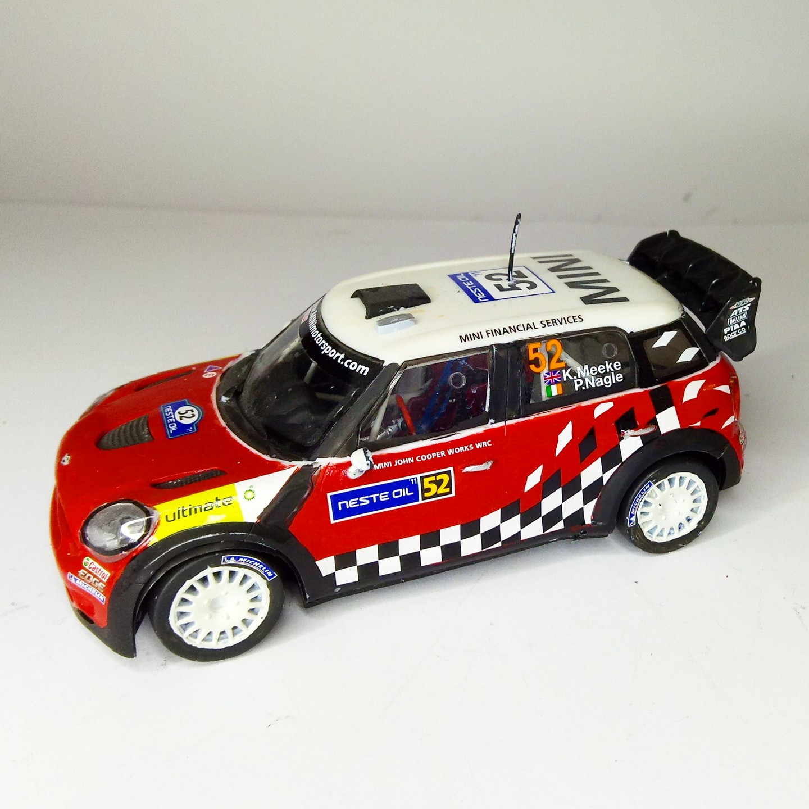
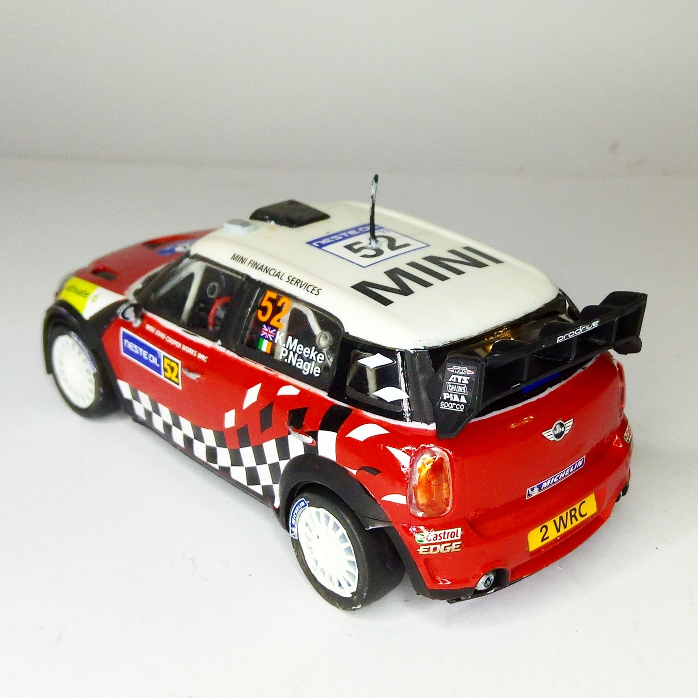

Auto e veicoli stradali · scale model archive
Mini Countryman WRC
Mini Countryman WRC — Kit: Airfix, Scale: 1/32. As raced in WRC 2011 Nice unusual subject #1/32 #Airfix #Countryman

Photo gallery

English description
As raced in WRC 2011
Nice unusual subject
#1/32 #Airfix #Countryman
Descrizione italiana
Come corse nel WRC 2011. Soggetto insolito e molto piacevole.